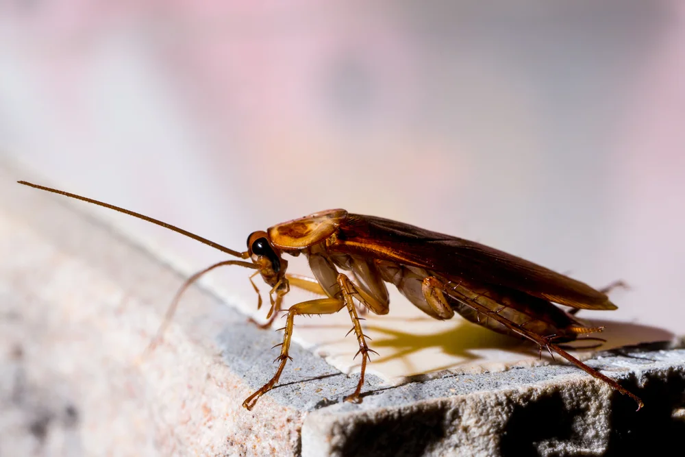
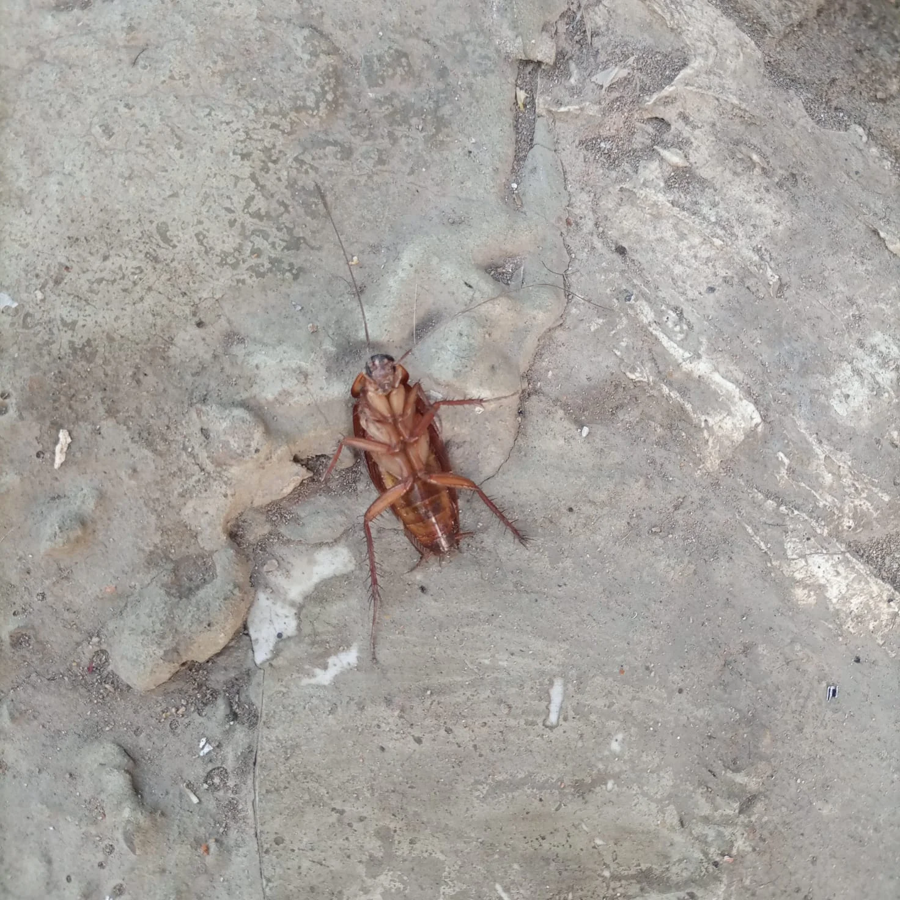
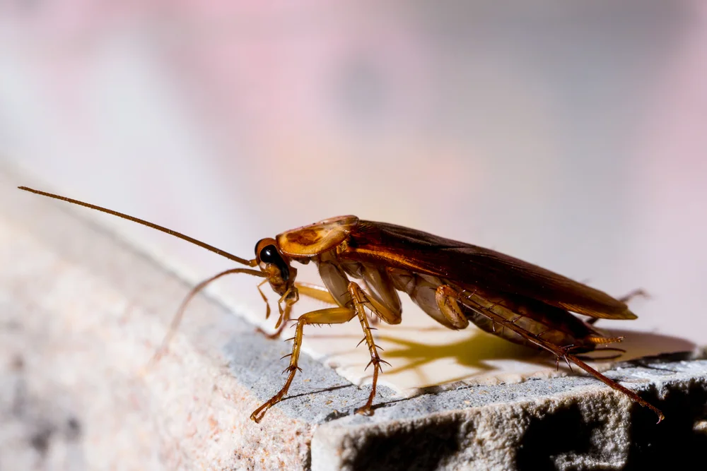
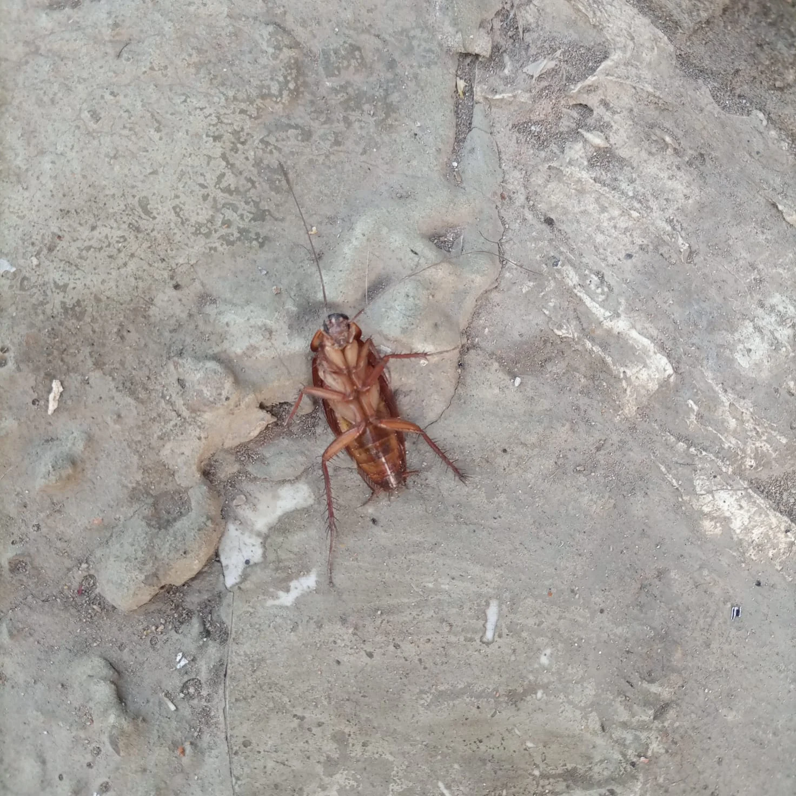

Désinsectisation à Casablanca
Désinsectisation à Casablanca Maroc
WINBEST DÉRATISATION intervient pour tous vos besoins de désinsectisation de cafards, termites ou autres nuisibles à Casablanca au sein des maisons individuelles, entreprises ou collectivités. Votre technicien hygiéniste intervient dans la lutte contre les cafards et autres cancrelats chez les professionnels, particuliers et collectivités basés. Extrêmement envahissants, les cafards, blattes, puces, fourmis, punaises, mouches, poissons d'argent, chenilles ou acariens peuvent être vecteurs de maladies ou représenter un risque de problème sanitaire sérieux.
En effet, ce spécialiste propose des solutions efficaces contre la prolifération des insectes nuisibles en employant des produits insecticides adaptés au type de nuisible, niveau d'infestation, nombre de pièces à traiter ainsi qu'à la nature du local dans lequel a lieu l'éradication des insectes rampants, tels que les blattes, cafards, punaises de lits, poissons d'argent ou encores coléoptères. Ce spécialiste de la désinsectisation peut également éradiquer toute trace d'insecte volant comme les guêpes, frelons, moustiques, mouches et mites de vêtement.
Nous offrons des services spécialisés de lutte antiparasitaire à l'échelle du Maroc

WINBEST DERATISATION s'appuie sur plus de 20 ans d'expérience dans le domaine de la lutte antiparasitaire au Maroc. Nous fournissons des services fiables de lutte contre les parasites et de prévention pour les maisons et les entreprises. En tant que leader et innovateur du secteur, nous sommes fiers de fournir des solutions personnalisées à nos clients.
WINBEST DERATISATION, un fournisseur de services de contrôle des parasites de haute qualité ayant une empreinte nationale au Maroc.
Que vous suspectiez une infestation ou que vous deviez mettre à jour vos exigences existantes en matière de lutte antiparasitaire pour vos propriétés, nos techniciens hautement qualifiés en lutte antiparasitaire peuvent vous aider.
Des méthodes de désinsectisation adéquates au lieu de vie
Il faut savoir que toutes les techniques de désinsectisation ne sont pas efficaces sur tous types d'insectes. En ce sens, la technique la plus adéquate est choisie en fonction de l'espèce d'insecte concernée, son stade de développement (larve ou adulte) et la nature de la zone à traiter. Afin de mener à bien la lutte anti insectes, votre professionnel de la désinsectisation et de la désinfection peut avoir recours à la fumigation et la pulvérisation de produits adaptés. Efficaces, ces solutions sont recommandées pour lutter contre les punaises de lit, les puces, les mites, mais également de nombreux insectes volants.
Afin d'éviter tout contact avec des substances toxiques, les occupants du lieu traité devra quitter la zone temporairement. Dans le but d'éradiquer rapidement les blattes et les cafards, la technique la plus utilisée demeure le gel goutte à goutte, qui contamine le système digestif de l'insecte lui permettant ainsi d'éliminer la colonie.
Comment se passe une dératisation / désinsectisation ?
Le processus de dératisation / désinsectisation est assez simple. Le tout premier déclencheur est évidemment l'appel du client qui souhaite que son domicile ou ses locaux soient désinfectés et débarrassés des nuisibles à Casablanca. Un rendez-vous est rapidement pris et notre équipe est envoyée à l'adresse spécifiée dans les plus brefs délais.
Dans un premier temps, nos experts effectuent un état des lieux et un diagnostic de l'espèce envahissante et du nombre d'individus. Cette expertise permet de décider des méthodes à appliquer pour faire disparaître les nuisibles. Il peut s'agir d'une lutte contre les punaises de lit, les cafards / blattes, les fourmis sans oublier les souris et les rats. Les lieux d'intervention peuvent varier : il peut s'agir de logements, de granges, de bureaux, d'établissements de restauration, de boutiques, de hangars ou encore de locaux de stockage.

Quel traitement est appliqué pour la désinsectisation?
Solution personnalisée et offre un suivi de la situation sur une certaine période.
De façon générale, notre entreprise propose un devis gratuit avant de signer le contrat de prestation. Et en plus des prestations de désinfection proprement dites, le spécialiste peut également prodiguer des conseils pour prévenir et éviter les récidives des rongeurs ou insectes.
Pour traiter les indésirables et les éradiquer à Casablanca, l'expert en dératisation ou désinsectisation utilise des produits spécifiques et homologués. Notre entreprise se fait le devoir d'utiliser exclusivement des produits justifiant d'une homologation délivrée par le Ministère de l'Agriculture, se conformant ainsi à la législation en vigueur en la matière.
Dans tous les cas, l'usage de ces produits chimiques est réservé aux professionnels disposant des agréments et des qualifications nécessaires. Ces substances antiparasitaires ont été spécialement formulées pour respecter la santé des personnes et des animaux domestiques sans oublier la protection de la qualité de l'environnement.
Faites confiance aux compétences de notre société de désinsectisation à Casablanca qui a une expérience de plus de 20 ans dans le domaine de dératisation / désinsectisation.

WINBEST DERATISATION s'appuie sur plus de 20 ans d'expérience dans le domaine de la lutte antiparasitaire au Maroc. Nous fournissons des services fiables de lutte contre les parasites et de prévention pour les maisons et les entreprises. En tant que leader et innovateur du secteur, nous sommes fiers de fournir des solutions personnalisées à nos clients.
WINBEST DERATISATION, un fournisseur de services de contrôle des parasites de haute qualité ayant une empreinte nationale au Maroc.
Que vous suspectiez une infestation ou que vous deviez mettre à jour vos exigences existantes en matière de lutte antiparasitaire pour vos propriétés, nos techniciens hautement qualifiés en lutte antiparasitaire peuvent vous aider.
Des méthodes de désinsectisation adéquates au lieu de vie
Il faut savoir que toutes les techniques de désinsectisation ne sont pas efficaces sur tous types d'insectes. En ce sens, la technique la plus adéquate est choisie en fonction de l'espèce d'insecte concernée, son stade de développement (larve ou adulte) et la nature de la zone à traiter. Afin de mener à bien la lutte anti insectes, votre professionnel de la désinsectisation et de la désinfection peut avoir recours à la fumigation et la pulvérisation de produits adaptés. Efficaces, ces solutions sont recommandées pour lutter contre les punaises de lit, les puces, les mites, mais également de nombreux insectes volants.
Afin d'éviter tout contact avec des substances toxiques, les occupants du lieu traité devra quitter la zone temporairement. Dans le but d'éradiquer rapidement les blattes et les cafards, la technique la plus utilisée demeure le gel goutte à goutte, qui contamine le système digestif de l'insecte lui permettant ainsi d'éliminer la colonie.
Le processus de dératisation / désinsectisation est assez simple. Le tout premier déclencheur est évidemment l'appel du client qui souhaite que son domicile ou ses locaux soient désinfectés et débarrassés des nuisibles à Casablanca. Un rendez-vous est rapidement pris et notre équipe est envoyée à l'adresse spécifiée dans les plus brefs délais.
Dans un premier temps, nos experts effectuent un état des lieux et un diagnostic de l'espèce envahissante et du nombre d'individus. Cette expertise permet de décider des méthodes à appliquer pour faire disparaître les nuisibles. Il peut s'agir d'une lutte contre les punaises de lit, les cafards / blattes, les fourmis sans oublier les souris et les rats. Les lieux d'intervention peuvent varier : il peut s'agir de logements, de granges, de bureaux, d'établissements de restauration, de boutiques, de hangars ou encore de locaux de stockage.

Quel traitement est appliqué pour la désinsectisation?
Solution personnalisée et offre un suivi de la situation sur une certaine période.
De façon générale, notre entreprise propose un devis gratuit avant de signer le contrat de prestation. Et en plus des prestations de désinfection proprement dites, le spécialiste peut également prodiguer des conseils pour prévenir et éviter les récidives des rongeurs ou insectes.
Pour traiter les indésirables et les éradiquer à Casablanca, l'expert en dératisation ou désinsectisation utilise des produits spécifiques et homologués. Notre entreprise se fait le devoir d'utiliser exclusivement des produits justifiant d'une homologation délivrée par le Ministère de l'Agriculture, se conformant ainsi à la législation en vigueur en la matière.
Dans tous les cas, l'usage de ces produits chimiques est réservé aux professionnels disposant des agréments et des qualifications nécessaires. Ces substances antiparasitaires ont été spécialement formulées pour respecter la santé des personnes et des animaux domestiques sans oublier la protection de la qualité de l'environnement.
Faites confiance aux compétences de notre société de désinsectisation à Casablanca qui a une expérience de plus de 20 ans dans le domaine de dératisation / désinsectisation.